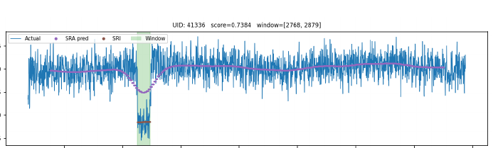

ALMA QA2 platforming
Calibration spectra are smooth but not flat. Platforming is a compact instrumental offset that can propagate into science cubes if it is not flagged early.
- Localized interval anomaly in frequency space
- Returns a row score, interval, and fitted background
- Designed for review-friendly QA2 screening
